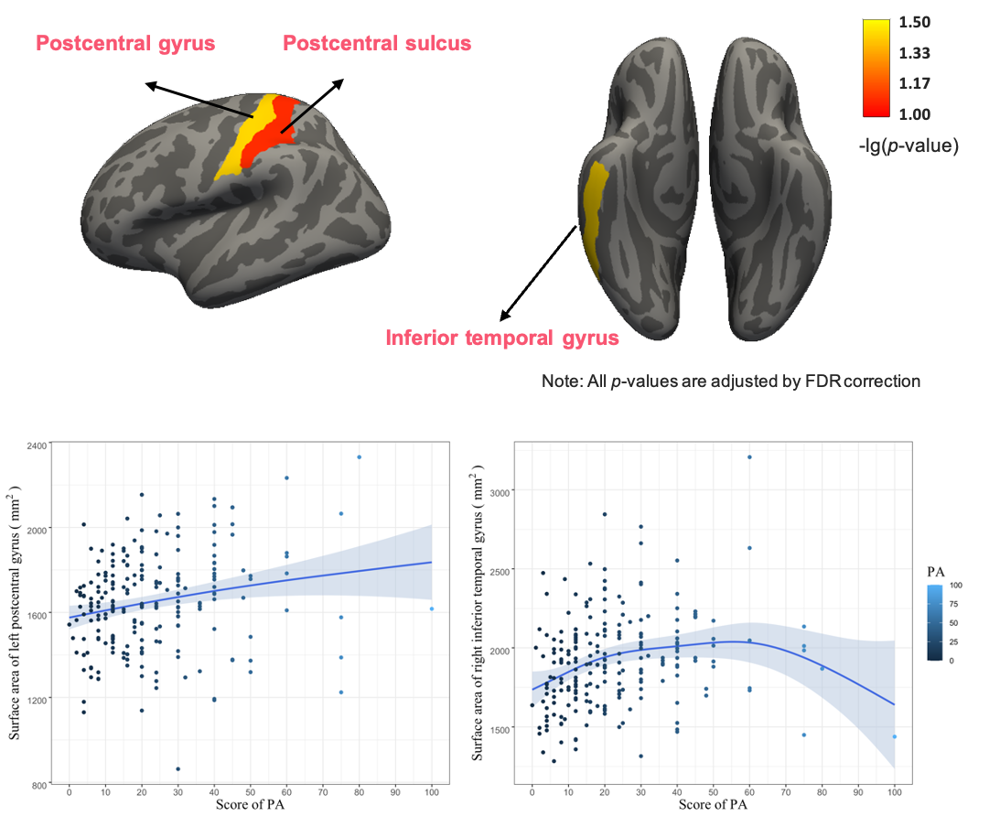
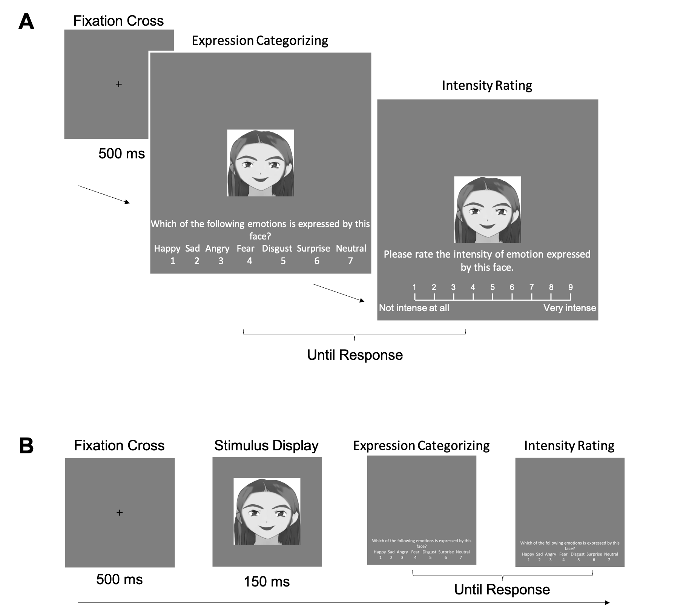
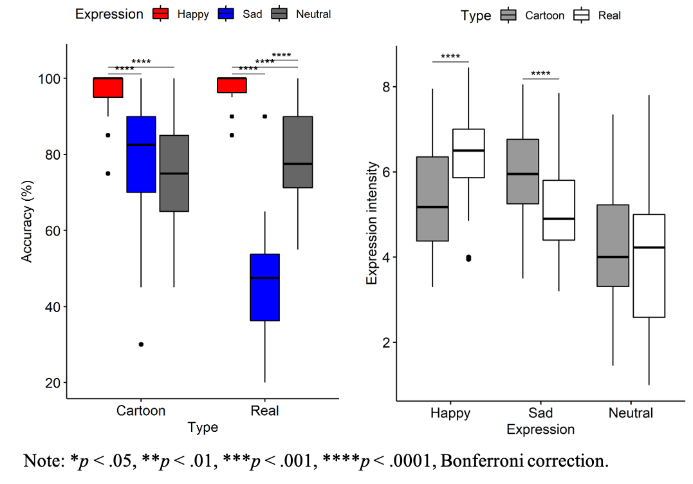

Figure 1 Brain structural (left) and functional plasticity (right) in different PA levels
Prepuberty and puberty are critical periods with brain develop rapidly until become a highly structured and functionally specialized brain. And the plasticity of gray and white matter continues into the 30th year of life[1].
Previous studies found that PA can significantly promote the development of brain function which is related to the improvement of cognition function and academic performance[2-4].
Physical activity (PA) refers to any bodily movement resulting from energy expenditure of skeletal muscles[5]. Its intensity can be quantified by the frequency, times, and the feelings of daily physical exercise[6].

Figure 2 Surface area of regions that significant correlated with PA
PA shows a positive relationship to the surface area of left postcentral gyrus (Figure 2: left) and shows an invers-U relationship to right inferior temporal gyrus (Figure 2: right).
Previous research found that the postcentral gyrus is the location of the primary somatosensory cortex and it is responsible for processing information related to the sense of touching[7]. The number of synaptic neurons of the primary somatosensory cortex may be increased under the action of somatic and external sensory stimulation during physical activities.
Inferior temporal gyrus is one of the higher levels of the ventral stream of visual processing, associated with the representation of objects, places, faces, and colors[8] and its relationship with PA should be further studied.
Reference
[1] Lenroot, R. K., & Giedd, J. N. (2006). Brain development in children and adolescents: insights from anatomical magnetic resonance imaging. Neuroscience & Biobehavioral Reviews, 30(6), 718-729.
[2] Davis, C. L., Tomporowski, P. D., McDowell, J. E., Austin, B. P., Miller, P. H., Yanasak, N. E., ... & Naglieri, J. A. (2011). Exercise improves executive function and achievement and alters brain activation in overweight children: a randomized, controlled trial. Health Psychology, 30(1), 91-98.
[3] Hillman, C. H., Erickson, K. I., & Hatfield, B. D. (2017). Run for your life! Childhood physical activity effects on brain and cognition. Kinesiology Review, 6(1), 12-21.
[4] Hillman, C. H., Buck, S. M., Themanson, J. R., Pontifex, M. B., & Castelli, D. M. (2009). Aerobic fitness and cognitive development: Event-related brain potential and task performance indices of executive control in preadolescent children. Developmental Psychology, 45(1), 114-129.
[5] Global Strategy on Diet, Physical Activity and Health: Physical activity and young people. (2020, November 26). Retrieved September 22, 2021, from the World Health Organization (WHO): https://www.who.int/news-room/fact-sheets/detail/physical-activity
[6] Deqing, L. (1994). 高校学生应激水平及其与体育锻炼的关系[Stress level in college students and its relationship with physical exercise]. 中国心理卫生杂志, 8(1), 5-6.
[7] Iwamura, Y., Tanaka, M., Iriki, A., Taoka, M., & Toda, T. (2002). Processing of tactile and kinesthetic signals from bilateral sides of the body in the postcentral gyrus of awake monkeys. Behavioural Brain Research, 135(1-2), 185-190.
[8] Lafer-Sousa, R., & Conway, B. R. (2013). Parallel, multi-stage processing of colors, faces and shapes in macaque inferior temporal cortex. Nature Neuroscience, 16(12), 1870-1878.
As an attractive art form, cartoon faces are widely used in daily life. Cartoon animation is an important carrier that not only helps children to acquire emotional knowledge[1, 2] but enables adults to express feelings and attitudes[3].
Sophisticated computing models have been developed to animate emotional facial expressions with different types of artistic cartoon avatars in 2D and 3D[4-6], but some critical issues remain unclear, such as how people recognize the emotional facial expressions in cartoon faces and the underlying perception mechanisms.
Although previous studies have used abstract nonreal faces with facial configurations similar to those of real faces[7-10], some critical questions remain, such as whether cartoon facial expressions convey a higher degree of emotional intensity than real ones and what the mechanism for perceiving cartoon facial expression is.

Figure 1 The sequence of a single trial in Experiment 1 (A) and Experiments 2 and 3 (B)
Therefore, in this study, three experiments were conducted to explore recognition of emotional facial expression on cartoon faces and the contribution of the single features. Experiment 1 aimed to explore whether the accuracy and intensity perception of emotional expressions differ for cartoon faces and real human faces when whole faces are presented. Experiments 2 and 3 were conducted to examine the sufficiency and necessity of single facial features for emotional expression recognition.
Experiment 1 aimed to explore whether the accuracy and intensity perception of emotional expressions differ for cartoon faces and real human faces when whole faces are presented. Experiments 2 and 3 were conducted to examine the sufficiency and necessity of single facial features for emotional expression recognition.

Figure 1 Boxplots for recognition accuracy (left) and perceived expression intensity (right)
Experiment 1: Recognition of emotional information on cartoon and real faces
The results revealed a happy expression advantage in cartoon faces, as happiness was identified more accurately than neutral and sad expressions.
we also found that sad expressions on cartoon faces tended to be perceived as sadder than sad expressions in real faces.

Figure 2 Influences of key facial features on recognition of emotion in cartoon faces
Experiment 2 & 3: Sufficiency and necessity of specific facial features
Taken together with the results from Experiments 2 and 3, this shows that information from the mouth itself was sufficient for the participants to identify happy expressions, and the removal of the mouth significantly decreased the accuracy of happiness identification in cartoon faces.
The eyebrows had an important role in perceived emotional intensity of sad expressions. When only the eyebrows were presented, perceived intensity of sadness was not different from that when the full face was presented, but perceived intensity was significantly affected when the eyebrows were hidden.
The current study provides an important reference for extending existing facial emotion recognition studies from real faces to cartoon faces, and the importance of features that was revealed in this study may shed light on the development of cartoon characters for emotional and social artificial intelligence.
Reference
[1] Baron-Cohen, S., Golan, O., & Ashwin, E. (2009). Can emotion recognition be taught to children with autism spectrum conditions?. Philosophical Transactions of the Royal Society B: Biological Sciences, 364(1535), 3567-3574.
[2] Schlosser, R. W., Brock, K. L., Koul, R., Shane, H., & Flynn, S. (2019). Does animation facilitate understanding of graphic symbols representing verbs in children with autism spectrum disorder?. Journal of Speech, Language, and Hearing Research, 62(4), 965-978.
[3] Jonassaint, C. R., Rao, N., Sciuto, A., Switzer, G. E., De Castro, L., Kato, G. J., ... & Wasan, A. (2018). Abstract animations for the communication and assessment of pain in adults: cross-sectional feasibility study. Journal of Medical Internet research, 20(8), e10056.
[4] Liu, S., Wang, J., Zhang, M., & Wang, Z. (2013). Three-dimensional cartoon facial animation based on art rules. The Visual Computer, 29(11), 1135-1149.
[5] Yu, J., Xie, Z., Huang, D., Ding, Y., Tang, S., & Ma, L. (2015, October). Real-Time 2.5 D Facial Cartoon Animation Based on Pose and Expression Estimation. In 2015 International Conference on Virtual Reality and Visualization (ICVRV) (pp. 185-192). IEEE.
[6] Zaharia, T., Marre, O., Prêteux, F., & Monjaux, P. (2008, March). FaceTOON: a unified platform for feature-based cartoon expression generation. In Three-Dimensional Image Capture and Applications 2008 (Vol. 6805, p. 68050S). International Society for Optics and Photonics.
[7] Kendall, L. N., Raffaelli, Q., Kingstone, A., & Todd, R. M. (2016). Iconic faces are not real faces: enhanced emotion detection and altered neural processing as faces become more iconic. Cognitive Research: Principles and Implications, 1(1), 1-14.
[8] Beaudry, O., Roy-Charland, A., Perron, M., Cormier, I., & Tapp, R. (2014). Featural processing in recognition of emotional facial expressions. Cognition and Emotion, 28(3), 416-432.
[9] Calder, A. J., & Jansen, J. (2005). Configural coding of facial expressions: The impact of inversion and photographic negative. Visual Cognition, 12(3), 495-518.
[10] Calvo, M.G. and L. Nummenmaa, Detection of emotional faces: Salient physical features guide effective visual search. Journal of Experimental Psychology: General, 2008. 137(3): p. 471-494.